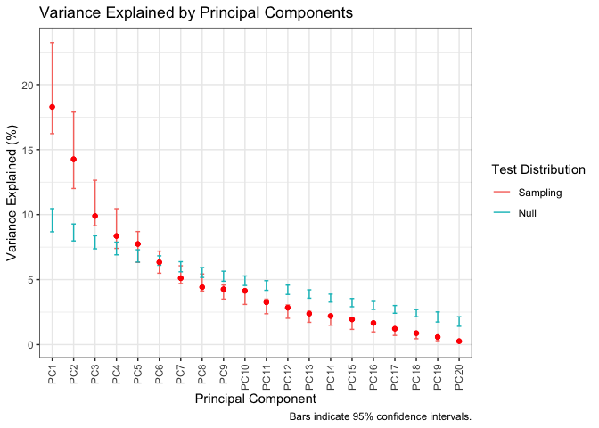
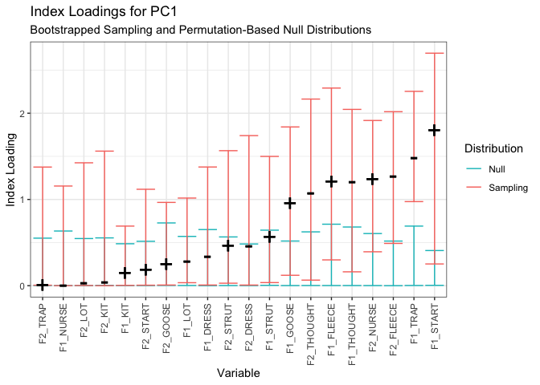
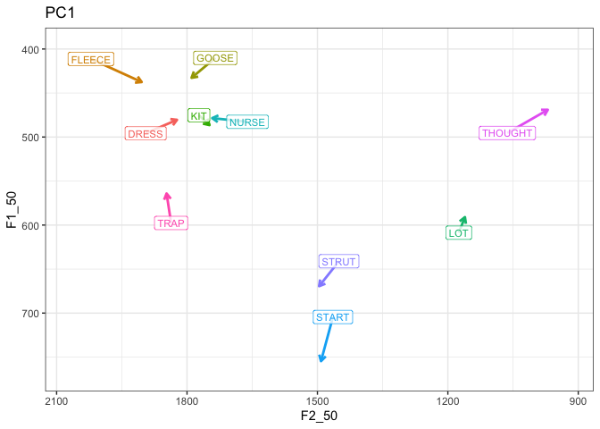
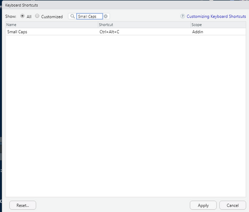

The nzilbb.vowels packages contains useful functions and data for the investigation of vocalic covariation. The core of the package is a set of functions to aid PCA-based studies of monophthongs.
The package evolves along with ongoing research on vocalic covariation carried out at NZILBB.
Installation
Install from CRAN:
install.packages('nzilbb.vowels')Development version
You can install the development version of nzilbb.vowels from GitHub with:
# install.packages("devtools")
devtools::install_github("nzilbb/nzilbb_vowels")Example
library(nzilbb.vowels)
#> Loading required package: patchwork
ggplot2::theme_set(ggplot2::theme_bw())
# normalise vowels using Lobanov 2.0 normalisation (see Brand et al. (2021))
onze_vowels <- onze_vowels |>
lobanov_2()
# apply PCA to random intercepts from GAMM models (again, from Brand et al. (2021))
onze_pca <- prcomp(
onze_intercepts |> dplyr::select(-speaker),
scale = TRUE
)
# Test PCA using bootstrapping approach (see Wilson Black et al. (2022))
onze_pca_test <- pca_test(onze_intercepts |> dplyr::select(-speaker))
# Plot variance explained by each PC.
plot_variance_explained(onze_pca_test)
# Plot index loadings of PC1
plot_loadings(onze_pca_test)
# Plot PC in vowel space
plot_pc_vs(onze_vowels, onze_pca_test)
For more information, see Wilson Black et al. (2022) and associated supplementary material.
RStudio Add-in
It is often useful to have Wells lexical sets in small capitals in R Markdown documents. The way to achieve this manually is to add “vowel”. This package includes an RStudio add in, which can be attached to a keyboard shortcut. (see ‘Addins’ at the top of the RStudio window). This add in works for both Quarto and RMarkdown files.
